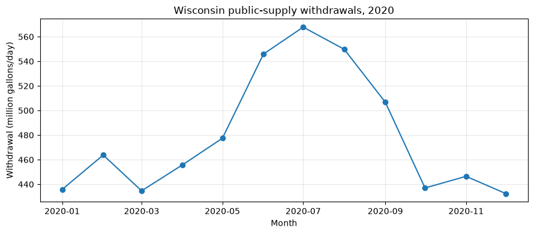
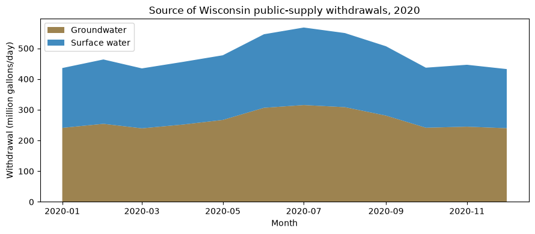

USGS Water-Use Data (NWDC)
The USGS National Water Availability Assessment Data Companion (NWDC) serves national-scale, modeled water-use estimates that underlie the USGS National Water Availability Assessment. Estimates are produced on a HUC12 (12-digit hydrologic unit) grid and can be queried for any county, state, or hydrologic unit. They are the modern replacement for the retired legacy NWIS water-use service.
dataretrieval exposes the service through a single function, nwdc.get_wateruse, which returns a tidy pandas.DataFrame plus a metadata object. Available models (categories) include:
model |
description |
|---|---|
|
public-supply withdrawals |
|
public-supply consumptive use |
|
irrigation withdrawals |
|
irrigation consumptive use |
|
thermoelectric-power water use |
Each model exposes its own set of variables; see the NWDC data catalog for the full list.
A motivating question
Where does Wisconsin’s public water supply come from — groundwater or surface water — and when through the year is demand highest?
Answering it is a typical water-use workflow: pull a state’s monthly withdrawals split by source, aggregate the HUC12 grid to a statewide time series, and look at the seasonal cycle and the groundwater/surface-water split.
[1]:
%matplotlib inline
import matplotlib.pyplot as plt
import pandas as pd
from dataretrieval import nwdc
1. Retrieve the data
We request three variables for the public-supply-withdrawals model: pswdtot (total), pswdgw (groundwater source), and pswdsw (surface-water source), for every HUC12 in Wisconsin, monthly, for calendar year 2020.
Wisconsin spans more HUC12s than fit on a single page, so the service returns the result across several pages — get_wateruse follows the pagination links and stitches the pages into one frame for you.
[2]:
df, md = nwdc.get_wateruse(
model="wu-public-supply-wd",
variable=["pswdtot", "pswdgw", "pswdsw"],
state="WI",
start_date="2020-01",
end_date="2020-12",
time_resolution="monthly",
)
print(f"{len(df):,} rows across {df['huc12_id'].nunique():,} HUC12 watersheds")
df.head()
Retrieving: nwdc · 4 pages · 21,684 rows · 95/100 requests remaining
21,684 rows across 1,807 HUC12 watersheds
[2]:
| huc12_id | year_month | pswdtot_mgd | pswdgw_mgd | pswdsw_mgd | |
|---|---|---|---|---|---|
| 0 | 040102011601 | 2020-01 | 0.223875 | 0.022856 | 0.201019 |
| 1 | 040102011601 | 2020-02 | 0.241280 | 0.024077 | 0.217204 |
| 2 | 040102011601 | 2020-03 | 0.216031 | 0.022007 | 0.194024 |
| 3 | 040102011601 | 2020-04 | 0.228126 | 0.023354 | 0.204772 |
| 4 | 040102011601 | 2020-05 | 0.237859 | 0.024068 | 0.213790 |
The frame is in long (tidy) form: one row per HUC12 and month. The huc12_id column is kept as a string so leading zeros are preserved, and each value column carries its unit — here _mgd, million gallons per day.
2. Aggregate to a statewide monthly series
Summing across every HUC12 gives the statewide withdrawal for each month.
[3]:
statewide = df.groupby("year_month")[["pswdtot_mgd", "pswdgw_mgd", "pswdsw_mgd"]].sum()
statewide.index = pd.to_datetime(statewide.index)
statewide
[3]:
| pswdtot_mgd | pswdgw_mgd | pswdsw_mgd | |
|---|---|---|---|
| year_month | |||
| 2020-01-01 | 435.828931 | 241.079916 | 194.749017 |
| 2020-02-01 | 463.772231 | 254.232782 | 209.539452 |
| 2020-03-01 | 434.692956 | 239.611969 | 195.080977 |
| 2020-04-01 | 455.904863 | 251.867757 | 204.037110 |
| 2020-05-01 | 477.426702 | 266.923754 | 210.502946 |
| 2020-06-01 | 545.854550 | 306.431839 | 239.422714 |
| 2020-07-01 | 567.777062 | 315.372850 | 252.404218 |
| 2020-08-01 | 549.757171 | 308.507553 | 241.249624 |
| 2020-09-01 | 506.739340 | 281.027019 | 225.712321 |
| 2020-10-01 | 437.006738 | 241.553234 | 195.453501 |
| 2020-11-01 | 446.476316 | 244.952029 | 201.524282 |
| 2020-12-01 | 432.453724 | 240.011665 | 192.442060 |
3. The seasonal demand cycle
Public-supply withdrawals peak in summer, when outdoor use (lawns, gardens, recreation) adds to baseline indoor demand.
[4]:
fig, ax = plt.subplots(figsize=(9, 4))
ax.plot(statewide.index, statewide["pswdtot_mgd"], marker="o", color="#1f77b4")
ax.set_title("Wisconsin public-supply withdrawals, 2020")
ax.set_ylabel("Withdrawal (million gallons/day)")
ax.set_xlabel("Month")
ax.grid(True, alpha=0.3)
fig.tight_layout()

4. Groundwater vs. surface water
Because total withdrawal is the sum of its groundwater and surface-water components, a stacked area shows how each source contributes through the year.
[5]:
gw_share = statewide["pswdgw_mgd"].sum() / statewide["pswdtot_mgd"].sum()
print(f"Groundwater supplies {gw_share:.0%} of Wisconsin's public water supply")
fig, ax = plt.subplots(figsize=(9, 4))
ax.stackplot(
statewide.index,
statewide["pswdgw_mgd"],
statewide["pswdsw_mgd"],
labels=["Groundwater", "Surface water"],
colors=["#8c6d31", "#1f77b4"],
alpha=0.85,
)
ax.set_title("Source of Wisconsin public-supply withdrawals, 2020")
ax.set_ylabel("Withdrawal (million gallons/day)")
ax.set_xlabel("Month")
ax.legend(loc="upper left")
fig.tight_layout()
Groundwater supplies 55% of Wisconsin's public water supply

Notes
Spatial resolution. Estimates are always returned on the HUC12 grid, regardless of the area you query. Joining
huc12_idto a HUC12 boundary layer (for example withgeopandas) lets you map the results.Pick one selector. Use exactly one of
state,county(5-digit FIPS), orhuc.stateaccepts a name, postal code, or FIPS; ahuccode’s length sets its level (huc="04"→ HUC2,huc="07070005"→ HUC8). Each selector also accepts a list (e.g.state=["WI", "MN"]), fanned out into one request per area and concatenated.Large areas paginate. A query spanning more than
limitHUC12s (600 by default) is split across pages;get_waterusefollows the links and returns a single concatenated frame. Whole-region queries (e.g.huc="04") may return many pages and take longer.Annual data. Set
time_resolution="annualcy"(calendar year) or"annualwy"(water year) and use four-digit years forstart_date/end_date; the time column comes back asyearinstead ofyear_month.Other models. Swap
modelandvariableto retrieve irrigation (wu-irrigation-wd) or thermoelectric (wu-thermoelectric) water use. See the NWDC data catalog for the variables available in each.